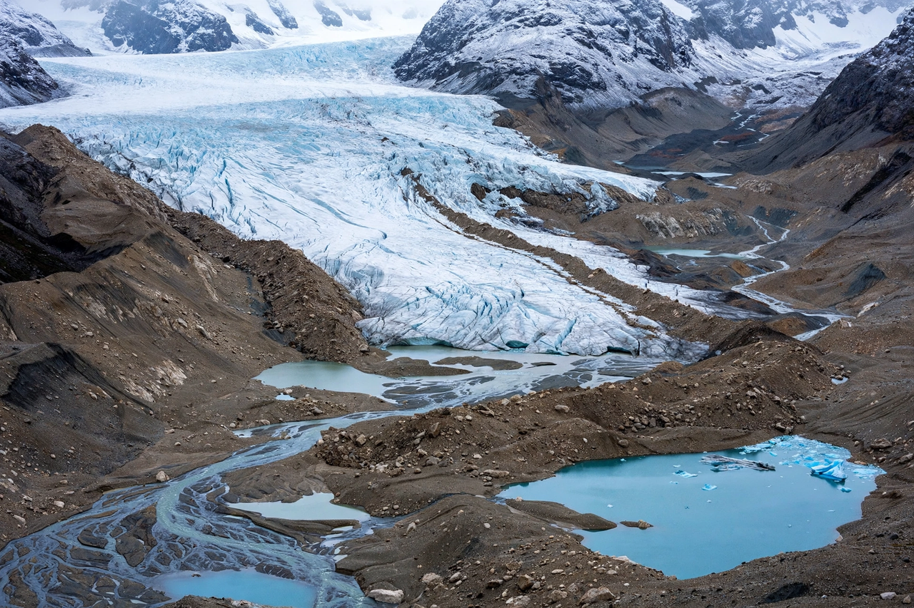

| Definition | An interval within an ice age when glaciers advance and global temperatures fall |
|---|---|
| Alternates with | Interglacial periods (warmer intervals) |
| Most recent | Last Glacial Period, c. 115,000 – 11,700 years ago |
| Principal drivers | Milankovitch cycles; greenhouse-gas feedbacks; ice-albedo feedback |

A glacial period (or simply a glacial) is an interval of time within an ice age marked by colder temperatures and extensive advances of glaciers and ice sheets. Glacials alternate with warmer interglacials. Earth is currently in the Holocene interglacial of the Quaternary Ice Age, which began about 11,700 years ago.
The most recent glacial period lasted from roughly 115,000 to 11,700 years ago. At its maximum extent, about 26,500–19,000 years ago (the Last Glacial Maximum), ice sheets up to 3–4 kilometres thick covered much of North America, northern Europe and Asia. So much water was locked in ice that global sea level stood about 120 metres lower than today, exposing land bridges such as Beringia between Siberia and Alaska — the route by which humans first reached the Americas — and joining islands such as Sri Lanka to the mainland of India.
The pacing of glacials over the past million years follows cycles of about 100,000 years, broadly matching variations in Earth's orbital eccentricity, with shorter cycles of axial tilt (41,000 years) and precession (about 23,000 years) — the Milankovitch cycles, which redistribute sunlight by latitude and season. Falling atmospheric carbon dioxide and the reflective feedback of growing ice sheets amplify the cooling; conversely, warming releases greenhouse gases that accelerate deglaciation.
Glacial periods are reconstructed from moraines and other landforms, from marine sediment cores, and from ice cores drilled in Greenland and Antarctica, which preserve trapped air bubbles recording past temperatures and atmospheric composition over hundreds of thousands of years.
Glaciation carved fjords and lake basins (including the North American Great Lakes), displaced species toward equatorial refugia, and shaped human prehistory by opening and closing migration routes. Without human influence on climate, the present interglacial would be expected to continue for tens of thousands of years.